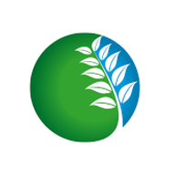

CÓBANO Cloud
Inventarios de campo, conectados con la naturaleza.

CÓBANO Cloud
Inventarios forestales y biológicos
? Ayuda
⇩ Instalar
⌂ Inicio
GUÍA RÁPIDA
Cómo usar CÓBANO Cloud
×
Crea un proyecto.
Elige Forestal o Biología y escribe un nombre que identifique el predio o estudio.
Prepara los sitios.
Sin archivos, agrégalos manualmente y usa GPS; con puntos, importa KML/KMZ o un ZIP SHP y la app intentará detectar el número; con polígono, impórtalo y calcula o define la cantidad de sitios.
Captura los datos.
Abre un sitio y agrega árboles u observaciones. Escribe el nombre común o científico para consultar sugerencias. En Biología, la fecha y hora local se asignan automáticamente al crear cada observación. Usa ⧉ para copiar el registro anterior y cambiar las mediciones.
Guarda evidencia y revisa resultados.
Toma fotos desde el sitio, permite el GPS para añadir coordenadas y consulta Mapa y Resultados. Los cálculos dependen de que las unidades y los criterios sean correctos.
Protege la información.
Descarga respaldos JSON con frecuencia. El guardado local no sincroniza automáticamente con otros teléfonos.
Catálogo de especies.
En línea, CÓBANO consulta el autocompletado de EncicloVida/CONABIO y NaturaLista (iNaturalist). Los taxones que selecciones se guardan en el catálogo local; la identificación automática nunca sustituye la revisión de campo.
Catálogo CONABIO
NaturaLista
Entendido